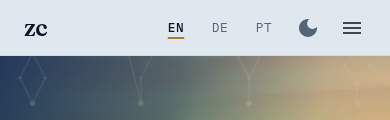

Mock-up · 2026-11-12 · round 2 · pair mode, step 1
Zua Caldeira: a logo
Round 2 draws the logo from Zua's own signature: three marks (D, E, F), each shown where it has to work, beside today's header: the header at 1280 and 390 px in the light and the night glaze, the browser tab at 16 and 32 px, and the card a shared link shows. Round 1's lattice marks (A, B, C) follow below for comparison.
Today


Angular's default shield.
From the signature
Three marks redrawn from the signature's characteristic strokes: the outer loop, the C a at its centre and the rising tail. They are new drawings in the site's cobalt and ochre, not traces: the signature itself is not in this page or this repository.
Gesto: the whole gesture
The signature reduced to its three moves: the stroke that starts inside, the big loop round it, the tail that rises out to the right. Inside, a clean C a in ochre. For small sizes a second drawing keeps only the loop, curled like an @, with the C.
Optimises for being recognisably his hand at every size: the curl reads at 16 px, the wide form carries the tail on the card. Motion is natural: it writes itself.
Gives up some privacy: of the three it keeps most of the signature's outline (but not its inner strokes, its weight or its rhythm), and it needs two drawings (wide and square).
Header · 1280 px: today, light, night
Header · 390 px: today, light, night

Browser tab · 16 and 32 px, light and dark
Shared link card · 1200 × 630: light, night
C a: the inner monogram
Only the letters at the signature's centre, C and a, redrawn as one cobalt line. The a leaves on a short ochre rise, the tail of the signature in miniature.
Optimises for privacy and calm: it shows none of the signature's outline, and sits beside the Fraunces name like a monogram.
Gives up the gesture that makes the signature his; Ca also reads as "Caldeira" alone, without Zua, and at 16 px it is two small letters.
Header · 1280 px: today, light, night
Header · 390 px: today, light, night
Browser tab · 16 and 32 px, light and dark
Shared link card · 1200 × 630: light, night
Laço: the loop round the name
The signature's loop, stretched to hold the name. The opening stroke runs under Zua Caldeira like an underline, the loop goes round it, and the tail leaves rising to the right. The tab icon borrows D's curl.
Optimises for the header and the card: the name stays the hero, set in Fraunces, and the hand frames it. Nothing to decode.
Gives up a mark of its own: below the header it falls back on D's curl, and at 390 px it is wide (about 160 px).
Header · 1280 px: today, light, night
Header · 390 px: today, light, night
Browser tab · 16 and 32 px, light and dark
Shared link card · 1200 × 630: light, night
D, E, F side by side
| D Gesto | E C a | F Laço | |
|---|---|---|---|
| Reads at 16 px | yes (the curl) | two small letters | borrows D's curl |
| Recognisably his hand | yes | a little | yes |
| Shows of the signature | its outline, redrawn | almost nothing | the loop, stretched |
| Name in the header | beside the mark | beside the mark | inside the loop |
| Drawings to keep | 2 (wide, square) | 2 (large, small) | 1 + D's curl |
| Recolours with the glaze | yes | yes | yes |
Recommendation: D. It is the only one of the three that is his hand at every size, from the 16 px curl to the card where the tail rises out of the frame, and one family covers the header, the tab and the card. F is the better header if the name should stay the hero; D's curl and F's loop are the same gesture, so they can be one family too.
The signature is his legal signature. Only these redrawn marks are in this repository; the scan and its trace stay outside it. D keeps the most of its outline: if that is too close, E is the private choice.
Earlier ideas: from the lattice
Round one (A, B, C), kept for comparison.
Losango: the lattice diamond
The 2×2 Hasse diagram, which is also the azulejo lozenge. ⊤ in ochre is the name, the join; ⊥ is open, where a protocol starts. It is the mark already in the four agreed page mock-ups.
Optimises for recognition at every size: four lines and four dots still read at 16 px,
and it matches the mock-ups the build follows.
Gives up the three strands of the hero
(software ∥ research ∥ running): it is the lattice of two, not three.
Header · 1280 px
Header · 390 px (mark only)
Browser tab · 16, 32, 64 px · home screen
One colour
Shared link card · 1200 × 630
Cubo: the hero's own lattice
The 2³ lattice of Zua = software ∥ research ∥ running, the drawing the hero already shows: three strands, their three pairs, the name at the top.
Optimises for meaning: the logo is the hero's claim, every strand is in it.
Gives up small sizes: twelve edges blur into a hexagon at 16 px (look at the tab), and a
hexagon-with-a-Y reads as a generic "cube" icon from far away.
Header · 1280 px
Header · 390 px (mark only)
Browser tab · 16, 32, 64 px · home screen
One colour
Shared link card · 1200 × 630
Placa: the name as a Lisbon street sign
Lisbon names its streets on azulejo plaques: a white glazed tile, a cobalt double frame, cobalt letters. Here the plaque carries the name, with two ochre lozenges; the small mark is one tile with a Z, whose corner arcs close into circles when tiles meet.
Optimises for being his alone: personal (Lisbon to Berlin), warm, and it
needs no maths to like. Strong on a CV, a talk slide or a shared card.
Gives up the lattice
in the logo itself (the lattice stays in the hero), and two marks to keep (plaque and tile).
Header · 1280 px
Header · 390 px (the tile)
Browser tab · 16, 32, 64 px · home screen
One colour
Shared link card · 1200 × 630
Round 1 side by side
| A Losango | B Cubo | C Placa | |
|---|---|---|---|
| Reads at 16 px | yes | a blur | yes (filled tile) |
| Carries the lattice idea | yes, two strands | yes, all three | no; Lisbon instead |
| Fits the agreed mock-ups | is already in them | swap the mark | new header brand |
| Recolours with the glaze | yes | yes | yes |
| Distinct from anyone else's | medium | low (cube icons) | high |
Recommendation: A. It is the settled idea in its simplest form, survives the browser tab, and the four agreed mock-ups already carry it, so the build only catches up. C is a strong second for print and the shared card; A and C can live together (diamond in the bar, plaque on the CV), but one mark is easier to keep.